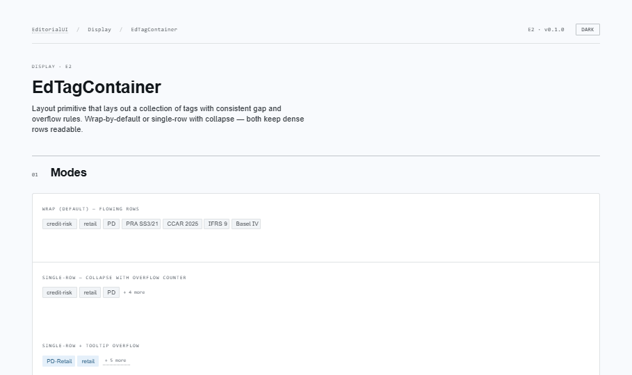
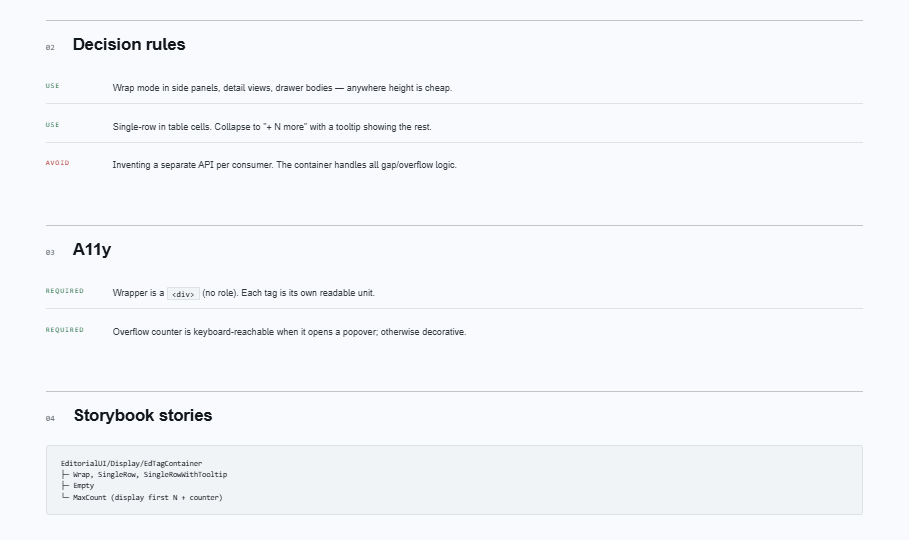
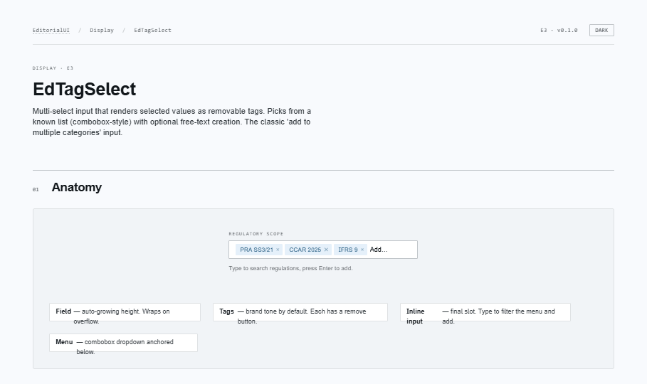
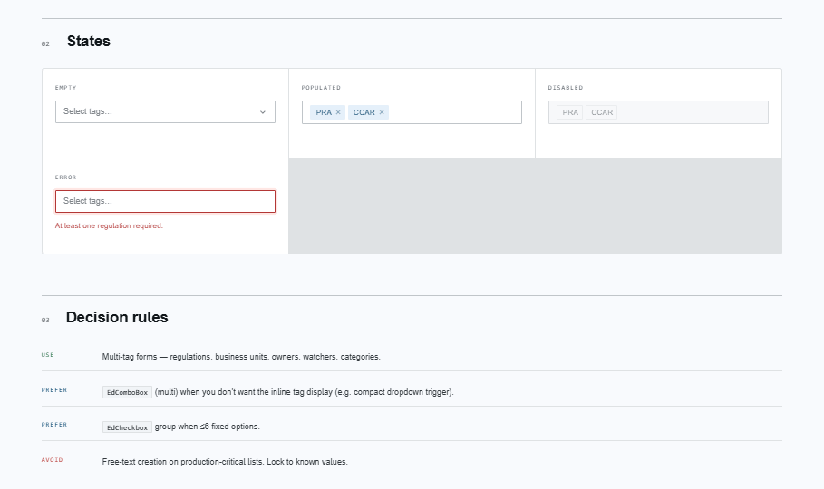
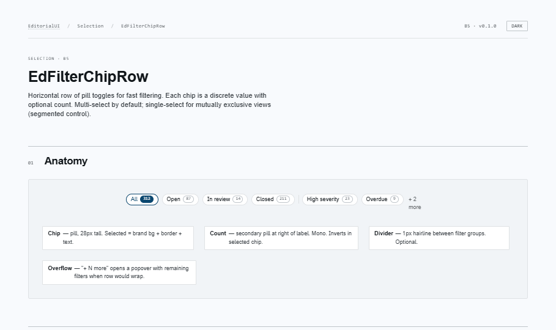
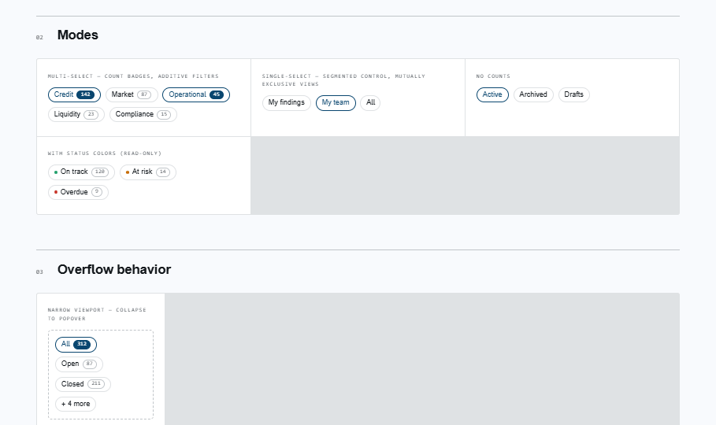
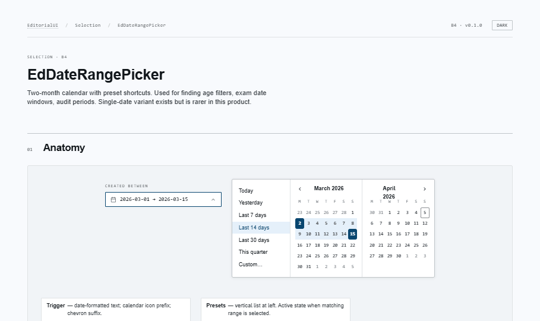
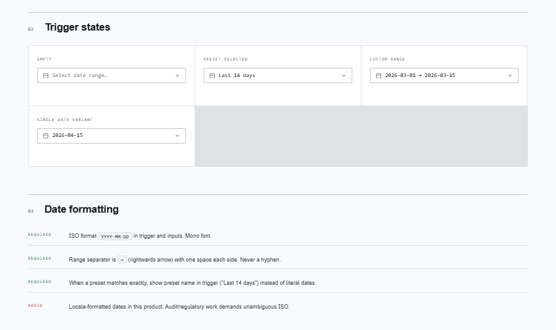

EditorialUI · Implementation
The final bundle. Higher-order components that stitch together primitives from the earlier bundles: the tag layout container, the multi-tag select, the table filter chip row, and the date-range picker. With this, all 37 primitives are implemented.
apostlerisk. Assumes Bundles 1–8 merged; covers the ISO-only date contract, the no-date-library rule, and the post-completion follow-ups now that the surface is frozen.
open ↗
Last mile: EdFilterChipRow + EdDateRangePicker
sit in the toolbar above EdDataTable (B8); EdTagContainer
renders EdTag collections in drawers/cards/cells; EdTagSelect
is the multi-tag form field. All composed at the call site — no hard deps.
Layout primitive for a collection of tags — consistent gap + overflow. Wrap (flowing rows) or single-row (collapses past maxVisible into "+N more", with optional renderOverflow for a tooltip). Owns gap/overflow so consumers don't reinvent it.


Multi-select input rendering selected values as removable tags, with a combobox dropdown. Picks from a known list; optional allowCreate for free text. Backspace removes last; each remove button labelled. Compact-trigger alternative: EdComboBox multi (B3).


Horizontal pill toggles for fast filtering above a table. Multi (additive checkboxes) or single (radiogroup). Count badges fold into the accessible name; status dots, group dividers, overflow slot. Selected = bg + border + text (never color alone).


Two-month calendar with preset shortcuts. ISO-only (YYYY-MM-DD, mono, → separator), no time, no locale. Shows the preset name on exact match. min/max constrain days; defaultPresets() returns the recommended set. Native Date math — no date library.


@radix-ui/react-popoverEdTagSelect, EdDateRangePicker — already present from Bundle 3.| Bundle | Group | Components |
|---|---|---|
| 1 | Foundations | EdIcon · EdButton · EdIconButton |
| 2 | Forms | EdTextField · EdPasswordInput · EdCheckbox · EdRadioGroup · EdSwitch · EdFormControlLabel |
| 3 | Selection | EdSelect · EdComboBox · EdAutocomplete |
| 4 | Display | EdTag · EdStatusBadge · EdChip · EdDivider · EdProgressMeter · EdCircularProgress |
| 5 | Feedback | EdTooltip · EdNotification · EdDialog · EdEmptyState |
| 6 | Containers | EdCard · EdModal · EdDrawer · EdDisclosure · EdAccordion |
| 7 | Navigation | EdTabs · EdBreadcrumb · EdMenu · EdContextMenu |
| 8 | Data | EdNativeTable · EdDataTable · EdList |
| 9 | Late composites | EdTagContainer · EdTagSelect · EdFilterChipRow · EdDateRangePicker |
Prodicus.Api/ClientApp/src/components/EditorialUI/. Each ships TSX + SCSS modules +
Storybook stories + Vitest tests, a README, a Claude Code hand-off prompt, and a screenshot grid.
The barrel in this bundle is the complete public surface. Migrate ProdicusUI consumers screen by
screen; the two libraries coexist until the last screen flips.